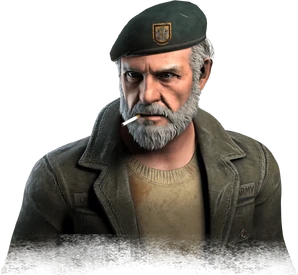
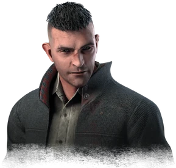
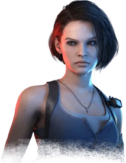

|
 |
Dwight FairfieldDwight est un Meneur Nerveux, capable de situer ses alliés et d'améliorer leur efficacité. Ses Compétences personnelles, Lien, Fais tes Preuves, et Meneur., lui permettent de s'approcher des autres Survivants et de lui procurer des bonus aux actions de chacun. |
Ace ViscontiAce est un Parieur Chanceux qui améliore les chances de toute l'équipe. Ses Compétences personnelles, Le Cœur sur la Main, Augmenter la Mise, et Atout dans la Manche, renforcent la chance de tous les Survivants et les aident à déverrouiller les Coffres. |
Meg ThomasMeg est une athlète pleine d'énergie, capable de semer la plupart des tueurs. Ses Compétences personnelles, Rapide et Silencieux, Course Effrénée, et Adrénaline, lui donnent un avantage pour fuir et mettre de la distance entre elle et le tueur. |
Claudette MorelClaudette est une botaniste studieuse capable d'améliorer la survie de son équipe en plus de la sienne. Ses Compétences Personnelles, Empathie, Connaissances en Botanique, et Auto-Traitement, lui permettent de repérer les Survivants blessés et de les soigner plus efficacement. |
|  | |||
Nea KarlssonNea se concentre sur le mouvement - se rendant plus rapide, plus équilibrée, et plus efficace pour échapper au Tueur. Ses Compétences personnelles, Atterrissage Équilibré, Évasion Urbaine, et Débrouillardise, en font un choix idéal pour accomplir certains objectifs et s'enfuir rapidement. |
Feng MinFeng Min est une Compétitrice Acharnée capable de rapidement adapter sa stratégie pour affronter tout un tas de situations. Ses Compétences personnelles, Technicien, Souple, et Vigilant, l'aident à réparer les Générateurs et à localiser le Tueur. Elle peut réparer les Générateurs silencieusement et ainsi être consciente de la présence du Tueur bien avant qu'il ne la remarque. |
Jake ParkJake est un survivaliste solitaire capable de s'en sortir dans la plupart des situations. Ses Compétences Personnelles, Volonté de Fer, Esprit Calme, et Saboteur, lui permettent de se déplacer plus efficacement dans l'environnement et de survivre tout en étant blessé. Il sait garder son calme face à la véritable terreur. Il ne fait qu'un avec la nature. |
William "Bill" OverbeckBill est un Vieux Soldat habitués aux situations désespérées. Ses Compétences personnelles, Abandonné, Sursis, et Indéfectible, le rendent plus puissants dans les pires moments. Il est dur comme fer et sait comment survivre dans n'importe quelle situation. |
|  | |||
David KingDavid est un Ferrailleur Endurci qui récompense la prise de risque. Ses Compétences personnelles, Nous Vivrons Éternellement, Dur à Cuire, et Pas de Pleurnicherie, récompensent un style de jeu basé sur la confrontation, mais le rendent vulnérables. Ses Compétences sont le résultat de plusieurs années de rugby et découlent de son physique solide et de son besoin d'adrénaline. |
Kate DensonKate est un Rossignol plein d'espoir, capable de tirer le meilleur parti de son environnement. Ses Compétences personnelles, Danse Avec Moi, Parfaite Occasion, et Effusion.png, lui accordent anticipation et cran pour se tirer des situations les plus dangereuses. |
Adam FrancisAdam est un Professeur plein de ressources, capable de s'adapter à de nouvelles circonstances et de développer des stratégies appropriées. Ses Compétences personnelles, Diversion, Libération, et Autodidacte, l'aident à détourner l'attention du Tueur, à survivre à des situations désespérées et à devenir de plus en plus doué au fil de la partie. |
Jane RomeroJane est une Célébrité influente qui va à contre-courant pour affronter les défis bille en tête. Ses Compétences personnelles, Solidarité, Assurance, et De Front, lui procurent une capacité d'adaptation qui lui permet d'aider les autres, ainsi qu'elle-même, à se sortir des situations délicates. |
Yui KimuraYui est une Pilote de courses de rue endurcie, capable de gagner des avantages pour elle et les autres Survivants lors de situations éprouvantes. Ses Compétences personnelles, Coup de Chance, Par Tous les Moyens, et Évasion, lui permettent de couvrir ses traînées de sang, de réinitialiser les palettes lâchées et d'aider les Survivants sans défense. |
Zarina KassirZarina est une documentariste courageuse, capable d’utiliser son intelligence de la rue pour éviter d’être détectée et aider grandement les autres survivants. Ses avantages personnels, Confidentiel, Leurre et Pour le peuple, l’aident à rester cachée face au danger, à créer des distractions et à guérir rapidement les autres en renonçant à sa propre sécurité. |
Mickaëla ReidMickaëla est une jeune mystique capable d'altérer la partie grâces à ses capacités surnaturelles. Ses Compétences Personnelles, Clairvoyance, Bénédiction : Cercle de Soins, et Bénédiction : Marche de l'Ombre, lui permettent de surveiller la zone tout en créant des refuges. |
Jonah VasquezJonah est un Génie des Mathématiques, capable d'utiliser la logique pour aider son équipe. Ses Compétences personnelles, Surmonter, Mesure de Correction, et Bénédiction : Exponentiel, lui permettent de vite s'échapper, de corriger les Tests d'Habileté échoués et de soigner les Survivants en État Critique. |
Vittorio ToscanoVittorio a erré sans fin dans le brouillard, essayant d’apprendre ses secrets, pendant des siècles. Ses avantages personnels, Energie potentielle, Débrouillard et le Paris rapide, lui permettent de stocker la progression du générateur à utiliser plus tard, de révéler l’emplacement du tueur après un grand contrôle de compétence et de donner aux autres un coup de pouce de vitesse lors de la réparation. |
Rebecca ChambersRebecca est une infirmière douée et une coéquipière dont la présence apaise ceux qui l'entourent. Ses Compétences Personnelles, Mieux que Neuf, Réconfort, et Hyperconcentration, lui permettent de conférer à ses coéquipiers des boosts de vitesse, de soulager temporairement les alliés en pleine lutte et de compléter les Tests d'Habileté à une vitesse accrue. |
Ada WongAda est un mystérieux agent secret dont les talents d'espionnage font d'elle une dangereuse adversaire. Ses Compétences Personnelles, Micro Caché, Guérison Réactive, et Profil Bas, lui permettent d'espionner un Tueur, de gagner un sursaut de guérison quand ses alliés sont blessés et de ne laisser aucune trace quand les autres Survivants sont morts. |
Haddie KaurHaddie est une podcasteuse courageuse et déterminée, dotée de la capacité de voir et de sentir les lieux de terribles souffrances, qu'elle appelle des Chevauchements. Ses Compétences personnelles, Concentration Intérieure, Manifeste Résiduel, et Excès de Zèle, lui permettent de pister les Survivants et les Tueurs après une attaque, d'utiliser les Lampes de Poche plus efficacement, et de réparer les Générateurs |
|  |  |
||
Yoichi AsakawaYoichi est un biologiste marin doublé d'un médium, dont le savoir et les capacités lui permettent de se protéger et d'aider les autres. Ses Compétences personnelles, Conseils Parentaux, Connexion Empathique, et Bénédiction : Théorie Ténébreuse, lui permettent de se cacher des Tueurs, de faire signe aux Survivants blessés et d'aider les autres à de se déplacer plus vite. |
Leon Scott KenedyLeon est un Jeune Agent de Police qui a fait bien plus que son devoir pendant l'épidémie de Raccoon City. Ses Compétences personnelles, Serrer les Dents, Grenade Aveuglante, et Détermination du Bleu, lui permettent d'ignore la douleur, de désorienter le Tueur et de suivre les Objectifs perdus. |
Jill ValentineJill est l'une des Fondatrices du S.T.A.R.S qui a réussi à venir à bout d'innombrables armes bio-organiques. Ses Compétences personnelles, Contre-Force, Renaissance, et Mine Explosive, lui permettent de se défendre indirectement, tout en offrant un soutien solide. |
Yun-Jin LeeYun-Jin Lee est une Productrice de musique égocentrique, capable de pousser ses pions même en cas de tempête. Ses Compétences personnelles, Voie Rapide, Succès Écrasant, et Instinct de Survie, lui permettent d'améliorer ses capacités quand les autres sont blessés et d'échapper rapidement à une poursuite. |
Élodie RakotoÉlodie est une Enquêtrice de l'occulte, capable de se fondre dans le décor et d'apporter une aide importante aux autres Survivants. Ses Compétences personnelles, Estimation, Supercherie, et Bras de Fer, lui permettent d'interagir avec des objets de manière différente, tout en ayant un plan de secours pour échapper aux Tueurs. |
Felix RichterFelix est un Architecte visionnaire, capable d'utiliser son implacable détermination pour trouver un moyen d'aider les autres Survivants. Ses Compétences personnelles, Visionnaire, Mesures Désespérées, et Conçu pour Durer, l'aident à révéler les Générateurs, secourir les Survivants et tirer le meilleur parti de ses outils. |
Cheryl MasonCheryl est une jeune femme habituée à la terreur, capable de s'auto-motiver et d'encourager son équipe. Ses Compétences personnelles, Protection de l'Âme, Pacte de Sang, et Alliance Refoulée, lui permettent de surmonter d'énormes épreuves, de rester en contact avec ses coéquipiers et de mettre au point des objectifs. |
Ash WilliamsAsh est un Loup Solitaire, arrogant et têtu. Un homme taillé pour la survie. Ses Compétences personnelles, À la Revoyure, Accrochez-Vous, et Force de Caractère, lui procurent une résistance supplémentaire à la douleur et face à l'adversité, ainsi que la possibilité de sortir ses amis de situations délicates. |
Jeff JohansenJeff Johansen est un Artiste calme, qui résiste contre vents et marées. Il a un passé sombre mais a mené une vie simple et tranquille jusqu'au décès de son père, laissant les choses s'arranger. Ses Compétences personnelles, Effondrement, Suivi des Soins, et Distorsion, lui accordent un avantage en observation et l'aident à dissimuler sa présence au Tueur. |
David TappTapp est un Détective déterminé qui peut localiser et terminer les Objectifs plus rapidement. Ses Compétences personnelles, Ténacité, Intuition de l'Inspecteur, et En Planque, l'aident à se concentrer sur les objectifs et à récupérer rapidement. Ses Compétences tournent autour de la détermination et du refus de l'abandon. |
Quentin SmithQuentin est un Marche-Rêves déterminé qui améliore la survie et la récupération de son équipe. Ses Compétences personnelles, Debout, Pharmacie, et Veillée, aident les Survivants à localiser les Portes de Sortie et à récupérer plus rapidement. Ses Compétences se concentrent sur la survie et l'assistance envers ses alliés. |
Laurie StrodeLaurie est une Survivante Déterminée, prête à relever tous les défis. Ses Compétences personnelles, Unique Survivant, Objet d'Obsession, et Coup Décisif, lui fournissent des compétences de survie en échange d'être plus exposée. Ses Compétences sont liées à l'Obsession du Tueur et à la survie. |
Steve HarringtonSteve est un Ancien Sportif populaire capable de protéger et d'aider ses compagnons Survivants. Ses Compétences personnelles, Baby-Sitter, Camaraderie, et Second Souffle, l'aident à créer des distractions, à supporter la douleur et à reprendre le combat. Avec la révocation du Chapitre de Dead by Daylight, ces Compétences ont été remplacées par des variantes génériques: Gardien, Affinités, et Renouvellement. |
Nancy WheelerNancy est une Journaliste capable de saisir des éléments qui échappent aux autres. Ses Compétences personnelles, Mieux Ensemble, Obnubilé, et Force Intérieure, lui donnent les informations et le courage nécessaires pour affronter des défis imprévus. Avec la révocation du Chapitre de Dead by Daylight, ces Compétences ont été remplacées par des variantes génériques, soit respectivement : Conscience Situationnelle, Conscience de Soi, et Guérison Interne |


Politique de confidentialité
Conditions d'utilisation
Avertissement
Behaviour Interactive
Starbreeze Studios
Unreal Engine
Behaviour Interactive, anciennement appelé Artificial Mind & Movement, développeur de Dead by Daylight est l’un des plus importants développeurs de jeux vidéo indépendants au Canada.
Le jeu a également été développer par Starbreeze Studios, une société suédoise de développement de jeux vidéo, fondée en 1998 sous le nom O3 Games.
Dead by Daylight est sortit officiellement sur Windows le 14 juin 2016 puis sur console : Xbox One, PlayStation 4, les 20 , 22 et 23 juin 2017, sur Nintendo Switch le 24 septembre 2019, ensuite sur iOS et Android le 16 avril 2020 puis enfin sur Stadia le 1er septembre 2020.